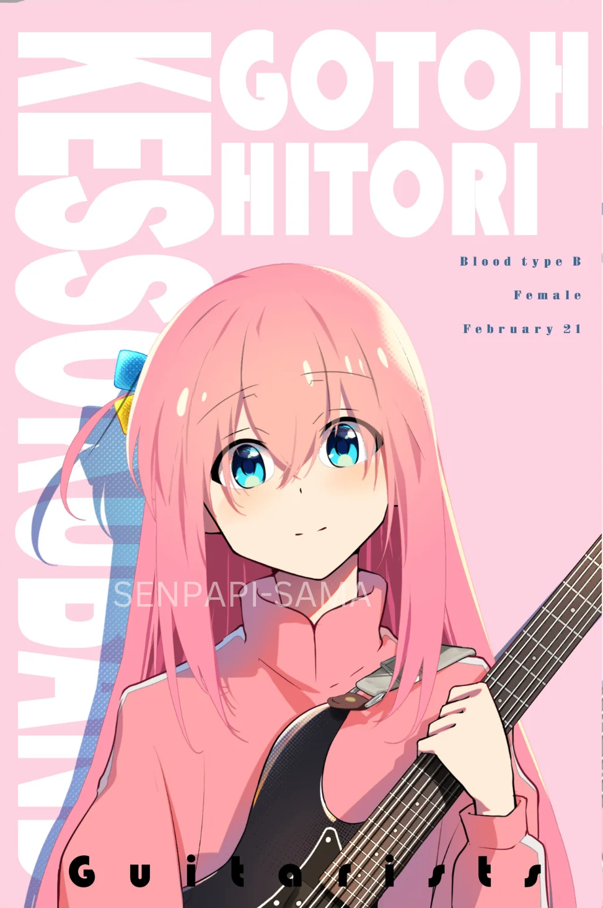
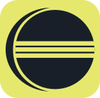

Eric Gabriel Cheng Li
PORTFOLIO
My Design Portfolio

About Me

Introduction
https://Eric Gabriel Cheng Li
Greetings, I’m a Designer with a deep passion for typography and UI/UX design. My work range covers logo, layout, illustration, game design and branding. I highly prioritize work ethic, creativity and customer needs in my work.

